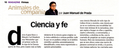
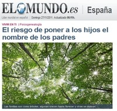
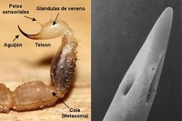
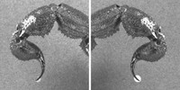
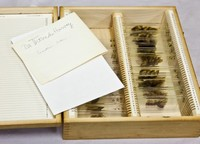
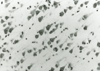

El mito de las renovables
Sun, 27 Nov 2011 19:36:06 +0000
Dawn Stover escribió hace unos días un artículo en The Bulletin of the Atomic Scientists sumamente realista (algunos dirán también que desmoralizante) sobre los mitos que acucian a las así llamadas energías renovables. Y es que desgraciadamente muchos idealizan esta forma de generación energética poniendo el énfasis en que “la energía así generada se obtiene [...]

Energías renovables. | Fuente imagen: renovablesverdes.com.
Dawn Stover escribió hace unos días un artículo en The Bulletin of the Atomic Scientists sumamente realista (algunos dirán también que desmoralizante) sobre los mitos que acucian a las así llamadas energías renovables.
Y es que desgraciadamente muchos idealizan esta forma de generación energética poniendo el énfasis en que “la energía así generada se obtiene de cosas que no se agotarán” (esta es literalmente el modo en que el Ministerio de Energía estadounidense la define en una web destinada a informar a los niños), en contraposición a las llamadas no renovables “que se obtienen de cosas que si se acabarán como el petróleo, carbón, gas natural o uranio”.
Esta simplista idea puede ser aceptable en la enseñanza primaria, pero un adulto que se plantee las ventajas de unas formas de generación frente a otras debe estar más formado para poder evaluar de forma crítica las verdaderas opciones de una y otra.
Lógicamente a todos nos ecantaría que el ITER se mostrase viable en los próximos lustros, y acabar para siempre con una crisis energética que no ha hecho más que empezar (como vemos en el aumento global de energía que se produce cada año) pero lo cierto es que las formas de generación de energía renovable con las que ahora contamos: solar (fotovoltaica o térmica), eólica, maremotriz, geotérmica, biomasa o hidroeléctrica son cualquier cosa menos renovables.
Tal y como Stover se encarga de recalcarnos, la luz solar puede ser efectivamente renovable pero ni el silicio con el que fabricamos los paneles fotovoltaicos ni el agua necesaria para las turbinas en las térmicas (normalmente ubicadas en lugares muy secos) son inagotables. Lo mismo sucede con las geotérmicas (que dependen de la presencia de acuíferos para sus turbinas) o con el cemento y acero necesarios para fabricación de cada aerogenerador. Y ya hemos visto que cuando se apuesta por la biomasa el precio de los alimentos de primera necesidad parece subir de forma inaceptable. Los problemas asociados con las hidroelécticas son similares a las de las eólicas, la cantidad de acero y cemento necesario es impresionante, sobre todo teniendo en cuenta que se las diseña para que duren aproximadamente 50 años.
La intención del autor del artículo no es por supuesto la de erigirse en lo que yo denomino, perfecto agonías tecnológico, sino la de hacernos entender que, en ocasiones, las tésis defendidas por los ecologistas son demasiado simplistas y que no contamos aún con tecnologías que nos permitan generar energía de forma completamente limpia y reciclable.
Es una lástima, pero me temo que encontrar una solución al doble problema ecológico-energético no es tan sencillo como clausurar las nucleares, abolir las centrales térmicas que queman carbón o gas natural y para volcarnos por completo en las alternativas con las que contamos ahora mismo. De ser así, todo el mundo debería afiliarse a Greenpeace.
En directo: Retransmisión comentada del lanzamiento del Curiosity
Sat, 26 Nov 2011 11:30:27 +0000
Sigue en Amazings la retransmisión en directo y comentada por Daniel Marín (Eureka Blog) y Wicho (Microsiervos) del lanzamiento del Mars Science Laboratory (MSL) de la NASA, la misión que enviará un Rover a Marte. La retransmisión y los comentarios han terminado. Os dejamos el shoutbox disponible y con el video del lanzamiento. Muchas gracias [...]
Sigue en Amazings la retransmisión en directo y comentada por Daniel Marín (Eureka Blog) y Wicho (Microsiervos) del lanzamiento del Mars Science Laboratory (MSL) de la NASA, la misión que enviará un Rover a Marte.
La retransmisión y los comentarios han terminado. Os dejamos el shoutbox disponible y con el video del lanzamiento. Muchas gracias a todos.
Pinche aquí para ver el vídeo
Juan Manuel de Prada, por la ignorancia hacia el misticismo
Fri, 25 Nov 2011 17:36:47 +0000
En su última columna en XLSemanal, el escritor Juan Manuel de Prada escribe las palabras “Dios” y “Creación” con mayúsculas y “ciencia” y “universo” con minúsculas. El detalle no tiene la menor importancia, por supuesto, pero dado que utiliza su tribuna para atacar a la Ciencia y manipular la realidad en favor de sus creencias, [...]
En su última columna en XLSemanal, el escritor Juan Manuel de Prada escribe las palabras “Dios” y “Creación” con mayúsculas y “ciencia” y “universo” con minúsculas. El detalle no tiene la menor importancia, por supuesto, pero dado que utiliza su tribuna para atacar a la Ciencia y manipular la realidad en favor de sus creencias, me ha parecido oportuno dar respuesta una vez más a tanta efervescencia cavernaria.

No contento con haberse erigido en el pasado en el gran defensor del Creacionismo, el señor De Prada se descuelga este domingo (atentos a su quiosco) con un alegato anticientífico en el que hace gala de su ignorancia y distorsiona gravemente lo que significa la Ciencia y cuáles son sus verdaderos objetivos. Bajo el título de “Ciencia y fe”, De Prada arremete contra ese constructo imaginario que él ha dado en llamar “mesianismo científico” o “idolatría de la ciencia” y que, como trataré de demostrar, no es más que una sucesión de falacias que no aguantan el más mínimo análisis intelectual. Pero antes de desmontar sus argumentos, procedamos a leer lo que dice el escritor con sus propias palabras:
La idolatría de la ciencia… pretende que el conocimiento científico y la fe religiosa son irreconciliables; y que la misión de la Ciencia no es otra sino instaurar un Paraíso en la tierra que expulse la fe al lazareto de las supersticiones. Inevitablemente, cuando la ciencia se endiosa y se hace idolatría, acaba exigiendo que no exista ninguna instancia moral que pueda poner cortapisas a su desarrollo: todo lo que es científicamente posible – afirma esta nueva forma de mesianismo científico- debe hacerse sin vacilación.
En primer lugar, estaría bien preguntarle al señor De Prada si cuando dice que la Ciencia “se endiosa” se refiere a que adquiere las malas costumbres de los dioses imaginados por los hombres, es decir, que trata de destruir todo aquello que no encaje con el dogma de fe. De ser así, el señor De Prada debe saber que el objetivo de la Ciencia no es dar un patrón de ideas inamovibles ni arrinconar ninguna idea en función de su procedencia sino ponerla en contraste con la realidad de los hechos y su posible falsabilidad mediante experimentos. Si su idea es producto de su imaginación y no hay manera de demostrarla, la carga de la prueba corre de su cuenta y no debe enfadarse por el nombre que le ponga la ciencia sino esforzarse en demostrar con pruebas que tiene razón y que existe su particular tetera de Russel o que hay un dragón en su garaje.
Por otro lado, la afirmación de que no existe “ninguna instancia moral que pueda poner cortapisas a su desarrollo” está escrita desde la profunda ignorancia de lo que es la Ciencia. Por un lado, existen los comités de ética y las autoridades administrativas, y por otro los científicos no son seres humanos desprovistos de un código de valores y llegados desde la nada para sembrar el mal. Es ésta una vieja falacia de la religión, insistir en que solo se puede tener moral, o principios, desde la creencia en seres mitológicos y pautas estipuladas desde algún altar, y que una persona agnóstica o atea tiene por fuerza que ser una criatura rastrera y sin moral.
Por último, la afirmación de que “todo lo que es científicamente posible debe hacerse sin vacilación” merecería despeñar al señor De Prada por el mismo precipicio por el que se arrojan desde hace siglos las ideas científicas que, aún siendo posibles, se han descartado por impracticables, inútiles o disparatadas. Hay mucha gente allí, pero seguro que les hace compañía.
Una vez realizada la primera embestida, llega el momento de poner en práctica este ejercicio tan divertido que hace todo intolerante, que es indicar que él no tiene ningún problema con lo tuyo, en serio, y que le estás malinterpretando:
Para un creyente, la ciencia no supone ningún obstáculo a su fe, puesto que ningún avance científico podrá jamás negar la existencia de Dios; por el contrario, el creyente verá siempre en la ciencia una posibilidad de avanzar en el conocimiento del universo, de las realidades empíricas, en definitiva, de la Creación.
Teniendo en cuenta la historia de la humanidad, esta parte tiene bastante poca gracia. Si la religión no encuentra obstáculo en la Ciencia, ¿por qué han tratado de impedir cualquier avance científico o del conocimiento humano desde la noche de los tiempos? Tal vez sea un malentendido y se hayan repuesto, pero la hostilidad de esta columna contra el avance científico no nos da muchas esperanzas.
Por cierto, lleva usted razón. La Ciencia no podrá demostrar la inexistencia de dios ni del Unicornio rosa. Prosigamos:
Pero llegó un momento en que la idolatría de la ciencia quiso erigirse en la única sabiduría o certeza posible, todo lo que no pudiera cobijarse en el ámbito científico quedaba automáticamente descalificado, como mera superstición y opinión prescindible.
Muy al contrario de lo que afirma el señor De Prada, la Ciencia no otorga certezas absolutas ni verdades inamovibles, sino que está sometida a revisión constante por la realidad de los hechos contrastados. Si alguien demuestra que una hipótesis es falsa, la Ciencia no actúa como la religión, persiguiendo al hereje, sino que termina reconociendo que tiene razón. Es razonable que la pérdida de la posición hegemónica de la religión le escueza al señor De Prada , pero en materia de persecución y de verdades absolutas, más le valdría no tirar mucho de archivo, a ver si le va a doler.
La idolatría de la ciencia pretende que el conocimiento empírico que nos brinda la ciencia… invada ámbitos que le son ajenos. La ciencia, por mucho que avance, no podrá explicarnos jamás la genialidad de una obra artística, ni dictaminar sobre nuestros sentimientos… simplemente porque son realidades que no pertenecen al mundo material. Y sin embargo son realidades plenamente existentes que exigen otras formas de conocimiento. Pero la idolatría de la ciencia… pretende convencernos de que la genialidad de una obra artística depende de las reacciones químicas que su contemplación produce nuestro organismo; pretende explicar genéticamente la índole de nuestros sentimientos…. y pretende, también, negar la existencia de Dios.
¡Uy! Esta falacia me encanta. Y el señor De Prada parece abonado a ella. Consiste en contraponer la ciencia con el mundo del arte y la creatividad. Está en la línea de la cita del a veces brillante Luis Buñuel, profundamente equivocado en esta ocasión: “La ciencia no me interesa. Ignora el sueño, el azar, la risa, el sentimiento y la contradicción, cosas que me son preciosas”. Bueno, pues va a ser que no, queridos amigos. El arte, el sueño y la risa no están reñidos con la Ciencia. De hecho, no conozco ninguna otra faceta de nuestra actividad tan plena de emociones intensas y ansia por saber, ni que implique tan profundamente al espíritu humano. Conocer las reacciones químicas que se producen en el cerebro, o indagar sobre nuestros genes, no mata la obra artística ni amenaza la genialidad de nadie. ¿Qué tontería es ésta? De Prada, como un niño asustado, reclama al mago que no le desvele el truco. “Por favor, no indaguéis en la causa última de las cosas, no desveléis la gracia de lo no revelado”. La ignorancia como coartada para el misticismo, un vicio intelectual como otro cualquiera.
Negando la existencia de Dios, en el fondo, la idolatría de la Ciencia niega la existencia de un Logos, de una Razón Creadora; y en un mundo carente de razón, sometido por lo tanto al caos, es más fácil defender la actuación de una ciencia liberada de todo tipo de trabas éticas o morales, una ciencia que ya no se conforma con escudriñar las leyes más íntimas de la naturaleza, sino que aspira a hurgar en ellas a capricho, aspira a alterarlas, a contrariarlas, a invertirlas, a abolirlas en fin, con la coartada de propiciar un mayor progreso humano.
Ya sabía yo que tarde o temprano iban a salir los “invertidos”. Por supuesto, la Ciencia es perversa porque pretende alterar el orden natural, un orden que curiosamente siempre coincide con la verdad arbitraria definida por la religión de cada cual. Jugando a la falacia circense, si las naturaleza debe ser inamovible, ¿deberíamos dejar de luchar contra la malaria o esos gusanos que, como suele citar David Attenborough, se comen los ojos de los niños? Si hablamos de la crudeza con que suceden las cosas en el orden natural le podría dar una charla sobre parásitos, enfermedades o leones que matan a sus crías. Ay, amigos impíos, ¡qué ambivalencia la del orden natural!
Por cierto, ¿habla De Prada del “progreso humano”? Mmmm, en seguida vamos a ello, pero dejemos que antes nos deje su momento extático para la demonización:
Pero ese mesianismo científico que se nos ofrece como una especie de panacea universal se revela, a la postre, una trampa saducea: las coartadas para propiciar un mayor desarrollo humano acaban convertidas en instrumentos de una mayor destrucción humana. Así ocurrió en el pasado en el ámbito de cierta investigación atómica, que acabó abriendo las puertas de la creación de armas mortíferas; sí ocurre hoy, por ejemplo, en el ámbito de cierta investigación genética.
No hay un solo artículo anti-científico en el que no acabe apareciendo la bomba y el viejo argumento de los científicos locos con ansias de destrucción. Los autores de este tipo de afirmaciones resultan ser algo olvidadizos. Se dejan en el tintero las vacunas, la penicilina, el aumento de la esperanza de vida gracias a los avances de la ciencia, los conocimientos sobre cuanto nos rodea, los avances técnicos que han mejorado la vida de millones de personas y hasta la imprenta, que permite poner negro sobre blanco pensamientos tan oscuros como el que acabamos de leer. El “progreso humano”, del que habla De Prada con añoranza en el anterior párrafo, se ha producido indefectiblemente cuando el ser humano se ha defendido de este tipo de ideas, cuando ha tirado a los predicadores del púlpito y ha decidido empezar a pensar libremente y sin inquisidores de la moralidad.
… una ciencia demente que, en su loca carrera en pos de beneficios pingües y espectacularidad mediática, no vacila en fomentar los métodos más sensacionalistas y en infundir las esperanzas más quiméricas entre quienes padecen enfermedades incurables, con tal de acrecentar su predicamento.
No tengo palabras para describir la vileza que destila este penúltimo párrafo. Las esperanzas quiméricas a los enfermos incurables, señor De Prada, se las suelen dar aquellos que recetan soluciones mágicas, oraciones o visitas a un santuario, no los científicos que trabajan honradamente para encontrar una solución. ¿Quién es el “demente” aquí y quién intenta “acrecentar su predicamento”? Conozco a algún columnista capaz de escupir sobre la razón y la libertad para defender sus creencias, está usted refinando el estilo, sin duda.
Y el colofón:
Así la ciencia se convierte en superstición, que era exactamente el calificativo que los idólatras de la ciencia reservaban a las creencias religiosas.
Rimbombante e inexacto, como todo el artículo en general. La última vez que le escribí le aconsejé que leyera y estudiara antes de meter la pata. Veo que no ha seguido mis consejos. Respeto profundamente que usted crea en lo que quiera, desde luego, pero utilizar una tribuna pública para mentir e intoxicar es harina de otro costal. Esa ciencia “demente” de la que usted habla ni existe ni da miedo, más bien deberíamos cuidarnos de ideas como las que promueven el retorno a la caverna. La Ciencia solo dice que sus creencias no se pueden demostrar, guarde la palabra “persecución” para mejor ocasión.
Mendeliev, el vodka y otras curiosidades de científicos
Fri, 25 Nov 2011 12:29:07 +0000
El químico ruso Dmitri Mendeliev, nacido en 1834, ha pasado a la historia por ser el creador de la tabla periódica de los elementos. Pero Mendeleiev, que puso orden y cordura en los elementos químicos conocidos con un sistema que se mantiene hasta la actualidad, también ha pasado a la historia por su amor (al menos, científico) [...]
El químico ruso Dmitri Mendeliev, nacido en 1834, ha pasado a la historia por ser el creador de la tabla periódica de los elementos. Pero Mendeleiev, que puso orden y cordura en los elementos químicos conocidos con un sistema que se mantiene hasta la actualidad, también ha pasado a la historia por su amor (al menos, científico) por el vodka…
Oscar Menéndez ha preparado para Quo algunas curiosidades poco conocidas de la vida de algunos científicos entre las que se encuentran:
- El vodka y Mendeliev
- Pasteur y el alcohol
- Einstein y sus mujeres
- El amor o el Nobel
- El escándalo sexual de Madame Curie
Ahora una de homeopatía en la Universidad Pública de Navarra
Thu, 24 Nov 2011 22:43:04 +0000
El amigo Javier Armentia ha iniciado una campaña en Actuable para pedirle al rector de la UPNA que no se impartan dos cursos de especialización en Homeopatía (organizados en colaboración con el patrocinador Laboratorios Boiron). ¡Necesitamos tu firma de nuevo! Esto es un no parar oiga… Más información en Por la boca muere el pez.
El amigo Javier Armentia ha iniciado una campaña en Actuable para pedirle al rector de la UPNA que no se impartan dos cursos de especialización en Homeopatía (organizados en colaboración con el patrocinador Laboratorios Boiron).
¡Necesitamos tu firma de nuevo! Esto es un no parar oiga…
Más información en Por la boca muere el pez.
La ciencia también es actualidad: Carta abierta a Ana Pastor
Thu, 24 Nov 2011 15:35:26 +0000
Estimada Sra. Pastor, Le escribo en relación al programa “Los Desayunos de TVE” que usted dirige y que, gracias a la programación online, puedo disfrutar cada día desde Heidelberg (Alemania). Considero que dicho programa es el referente español en el análisis de la actualidad y no podría recomendar mejor opción para aquel que quiera estar [...]
Estimada Sra. Pastor,
Le escribo en relación al programa “Los Desayunos de TVE” que usted dirige y que, gracias a la programación online, puedo disfrutar cada día desde Heidelberg (Alemania). Considero que dicho programa es el referente español en el análisis de la actualidad y no podría recomendar mejor opción para aquel que quiera estar bien informado.
Por “Los Desayunos de TVE” han pasado figuras relevantes del panorama político y social español así como destacados mandatarios extranjeros. La lista abarca a políticos, escritores o artistas; por citar algunos ejemplos.
Sin embargo, no tengo constancia de que ningún científico haya sido jamás invitado al programa. Más aun, habría que remontarse a las crisis médicas de las bacterias en las verduras alemanas o la Gripe A para encontrar algún contenido con un mínimo de información científica.
Como científico me apena esta situación que además se extiende por casi todos los medios informativos del país. Considero que la ciencia también es actualidad y que el debate de temas científicos tiene cabida en programas de actualidad como el suyo. Son temas que influyen a los ciudadanos ya que marcan -entre otros aspectos- el futuro económico del país, los modelos energéticos, avances médicos que afectan a nuestra salud o el conocimiento que nos permita tomar decisiones más eficientes.
Por poner un sólo ejemplo: escribo estas líneas tras firmar un manifiesto de apoyo a los investigadores del Centro de Investigación Príncipe Felipe en Valencia. Muchos de ellos perderán su puesto de trabajo en los próximos días por culpa de una lamentable e incompetente planificación por parte de varios organismos públicos. Con el desarme de dicho centro se cercenan avances en biomedicina cuyos resultados y aplicaciones ya sólo podremos soñar.
No pretendo interferir en la forma de dirigir su programa ni marcar a quién ni cómo entrevistar. Simplemente escribo estas líneas para que usted y otros periodistas consideren que la ciencia también tiene cabida en la agenda de la actualidad. Los avances científicos, así como las medidas que los favorecen o entorpecen, nos afectan a todos los ciudadanos. Quizás no hoy, pero sí mañana.
Atentamente,
Dr. Sergio P. Acebrón
German Cancer Research Center (DKFZ)
Al dr. Frankenstein le habría encantado esto
Thu, 24 Nov 2011 08:30:04 +0000
Rapid-prototyping es una técnica de fabricación de elementos sólidos a partir de la deposición de láminas de resina una sobre otra hasta obtener la forma final de una figura. Es como construir por pisos. A cada lámina de resina se le aplica un breve proceso de curado por luz ultravioleta antes de depositar la siguiente [...]
Rapid-prototyping es una técnica de fabricación de elementos sólidos a partir de la deposición de láminas de resina una sobre otra hasta obtener la forma final de una figura. Es como construir por pisos. A cada lámina de resina se le aplica un breve proceso de curado por luz ultravioleta antes de depositar la siguiente capa. Cada una de estas capas es de micras de metro de espesor, pero la velocidad de obtención de figuras es muy aceptable. Esta tecnología vio la luz hace unos 20 años. Ahora, siguiendo el mismo principio, se quieren conseguir impresoras que impriman… ¡órganos humanos!
La creación de órganos artificiales, como otros muchos descubrimientos de la ciencia, surgió antes en la ciencia-ficción. Concretamente, Philip K. Dick habló de estos órganos en su novela de 1964, Cantata 140, y un poco más tarde, Larry Niven describió órganos cultivados artificialmente en su obra de 1968, A Gift from Earth.
Sin embargo, esto ya es realidad y se han construido algunos modelos de bioimpresoras experimentales. Por ejemplo, en 2002, el científico Makoto Nakamura se dio cuenta de que las gotas de tinta en una impresora convencional son de un tamaño aproximado al de las bolsas de células humanas. Bajo esta lógica, en 2008 creó una impresora que producía conductos biológicos parecidos a las venas humanas. Se puede ver en este vídeo.
Otro prototipo de esta tecnología, y una de las más importantes, es la de la empresa Organovo. Esta empresa fue fundada por Gabor Forgacs (Universidad de Missouri), quien en 2008 logró imprimir venas humanas y tejido cardíaco a partir de células de pollo. Desde ese momento, Organovo se puso a trabajar con la empresa Invetech para crear la impresora comercial NovoGen MMX. Su precio es de 200.000$. De hecho, esta alianza empresarial planeó distribuir algunos modelos de su máquina durante 2010 y 2011 en algunos centros de investigación médica internacionales. Estas unidades sólo serán capaces de imprimir tejidos muy básicos, como venas, no órganos funcionales.
Una vez que las pruebas en humanos finalicen, Organovo espera que su tecnología genere material aplicable en cirugía bypass cardíaca. A continuación, desarrollarán otras máquinas que producirán otra serie de tejidos y órganos. Creen que el primer órgano que sea capaces de fabricar será un riñón. En este link podéis leer un artículo de Nature sobre Gabor Forgacs y la bioimpresión.
Pinche aquí para ver el vídeo
Antes de seguir, ¿cómo se imprime una vena, por ejemplo? Las “gotas de tinta” que imprime están compuestas por decenas de miles de células humanas que se depositan sobre papel biológico; cada una de estas esferas tiene 100-500 micras de diámetro y el sistema de impresión no se diferencia mucho del convencional de impresoras de tinta. La primera capa es de células madre y hay entre 10000 y 30000 células en ellas.
A continuación, la segunda capa del piso es una lámina de hidrogel de glucosa, el cual no se integra dentro de la biología de las células, sino que simplemente sirve de apoyo para la construcción del siguiente piso. Este piso vuelve a estar compuesto por esferas de células madre, y así un nivel tras otro. Esta estructura se deja por un día o dos que se fusione entre ella, el cual es trabajo que se hace de manera natural, ya que el papel de glucosa es comido por las células.
En diciembre de 2010, Organovo creó la primera vena a partir de células extraídas de una persona, y anticipa pruebas en humanos antes de 2015. Resulta interesante preguntarse cuánto tiempo se lleva desde la investigación en estos campos y la obtención de aplicaciones reales. En este caso, he encontrado un artículo científico de este equipo de investigación de 2004, con lo cual, la velocidad a la que están apareciendo resultados comerciales me parece muy grande.
Además de Forgacs, Anthony Alata es otro investigador referencia en estos temas. Este hombre hizo historia en 1999 cuando los órganos producidos en su laboratorio fueron probados por primera vez en humanos. Concretamente, ese mismo año muchos jóvenes recibieron vejigas de distintos tamaño según las necesidades y el resultado fue muy satisfactorio. Aquí se puede ver una charla TED que impartió sobre este tema.
Otro equipo liderado por el investigador Anthony Alata ha creado una impresora de piel. En las pruebas iniciales, consiguieron tratar heridas en ratones mediante la aplicación de células de piel, un coagulante y un tipo de colágeno en las heridas. El resultado es espectacular, y la proyección de este tipo de tecnología en humanos es altamente prometedora, tal y como aparece en este artículo de Maikelnai.
Esta tecnología está pensada para ser aplicada in situ: no tiene sentido crear la piel aparte y reemplazársela al paciente, sino que la máquina realiza un escaneo de en qué zona hace falta piel, y posteriormente se aplica en ella. Esto abre una gran puerta a aplicaciones cosméticas.
Fuentes y referencias:
http://www.explainingthefuture.com/bioprinting.html
http://hplusmagazine.com/2010/03/23/print-your-own-designer-organs.
http://www.economist.com/node/15543683
Los mejores podcasts de ciencia
Wed, 23 Nov 2011 08:30:17 +0000
La ciencia en Internet no solo se lee, también se oye. Los podcast son unos archivos sonoros que pueden escucharse al instante o descargarse para buscar luego el mejor momento de disfrutarlos. Sus creadores pueden ser tanto emisoras profesionales como aficionados. La variedad de temas y su enfoque resultan muy diversos. He recopilado una selección [...]
La ciencia en Internet no solo se lee, también se oye. Los podcast son unos archivos sonoros que pueden escucharse al instante o descargarse para buscar luego el mejor momento de disfrutarlos. Sus creadores pueden ser tanto emisoras profesionales como aficionados. La variedad de temas y su enfoque resultan muy diversos.
He recopilado una selección de podcast sobre ciencia, viajes e historia en español en orden alfabético, que no de importancia, porque todos son muy recomendables. Y por supuesto, si alguien conoce alguno más que merezca la pena para aumentar la lista, se aceptan sugerencias.
A Través del Universo: Podcast sobre astronomía promovido por científicos del Instituto de Astrofísica de Andalucía. Ya no se actualiza, pero merece la pena recorrer el archivo: http://universo.iaa.es/
Ciencia@NASA: Forma parte del programa divulgativo del mismo nombre, cuyo objetivo es ayudar al público a entender las investigaciones que se realizan en la NASA. Desgraciadamente, tampoco se actualiza. http://itunes.apple.com/es/podcast/ciencia-nasa/id83220816
Cienciaes: Una web que recopila los programas del físico y divulgador científico Ángel Rodríguez Lozano, creador y director de algunos programas históricos en la radio de divulgación científica, como Vanguardia de la Ciencia y El sueño de Arquímedes, de Radio Nacional. http://cienciaes.com/
COPE: la cadena de la Conferencia Episcopal ofrece varias secciones en los que se tratan temas de ciencia y salud. http://www.cope.es/a-las-siete-en-la-cope/secciones/ciencia-y-salud
El cinturón de Orión: Programa sobre astronomía de la alicantina Radio San Vicente http://www.ciudaddelasestrellas.org/cdle/orion/descarga.htm
Galaxias y Centellas: Programa de sobre ciencia y tecnología emitido por Canarias Radio que también cuenta con una web y los podcast del mismo. http://www.galaxiasycentellas.com/
IPHES: El Instituto de Paleoecología Humana y Evolución Social (IPHES) de la Universitat Rovira i Virgili, en el que trabaja uno de los paleontólogos de Atapuerca, Eudald Carbonell, ofrece también una web divulgativa sobre esta especialidad y un podcast. http://prehistoria.urv.es/es/node/251
La Aldea Irreductible: El blog de uno de los impulsores de Amazings, Javier Peláez, sobre ciencia, curiosidades e historia que también ofrece unos interesantes archivos sonoros y que fue galardonado con el Premio Bitácoras al mejor Podcast en 2010. http://podcast-irreductible.blogspot.com/
La Biblioteca de Alejandría: Podcast de la web Noticias 21, trata temas de ciencia, historia o curiosidades, acompañado de música con licencia Creative Commons. http://noticias21.libsyn.com/
La mecánica del caracol: Programa emitido en Radio Euskadi, la radio pública vasca, sobre divulgación histórica, cultural y científica, dirigido y presentado por Eva Caballero. http://www.eitb.com/es/radio/radio-euskadi/programas/la-mecanica-del-caracol/
Los Amantes de Urania: Creado por un grupo de aficionados a la astronomía, también hacen videos. http://amantesdeurania.podomatic.com/
Manual de ciencia: Una iniciativa desde la Universidad de Navarra sobre divulgación científica a cargo de Ignacio de Lorenzo y Javier Novo que también cuenta con su web A Ciencia Cierta. http://a100ciacierta.com/ http://www.unav.es/98.3/auto/manualdeciencia.php
Microciencia: programa de divulgación científica de Onda Regional de Murcia dirigido por Paulino Ros. http://www.orm.es/servlet/rtrm.servlets.ServletLink2?METHOD=FRMBLOG&sit=c,5&serv=BlogPortal2&idBlog=15
Mundo Podcast: ofrece un directorio con diversos podcast sobre ciencia http://mundopodcast.net/category/9/69 y viajes http://mundopodcast.net/category/9/55
Museos Científicos Coruñeses: Ofrecen la posibilidad de escuchar cursos y conferencias impartidas en sus instalaciones, o las audioguías que sirven para explicar las exposiciones. http://www.casaciencias.org/podcast/
Muy Interesante: Podcast de la conocida revista de divulgación científica. http://www.ivoox.com/podcast-articulos-muy-interesante_sq_f1100_1.html
Partiendo de Cero: Este programa de divulgación científica emitido en Onda Cero Radio y dirigido por Paco de León puede escucharse en podcast http://www.ondacero.es/audios/partiendo-de-cero/
Què feu que no dormiu? Este programa de Ràdio Barcelona tiene a unos colaboradores de lujo, los impulsores de Amazings. http://amazings.es/categorias/radio-barcelona/
Radio Kosmos: Se autodefinen como “la primera emisora de radio en el mundo de habla hispana en emitir vía Webcast, una programación dedicada exclusivamente a contenidos astronómicos y de exploración espacial” http://www.radiokosmos.org/
Radio Síntesis: según sus creadores, es la primera emisora online de ciencia y tecnología en España. El proyecto surge con el fin de “divulgar contenidos para tratar de resolver lagunas culturales y difundir los avances, hallazgos y descubrimientos de nuestros tecnólogos y científicos”. http://www.radiosintesis.com/
RNE: En la emisora pública se pueden escuchar varios programas sobre divulgación científica y medio ambiente:
A Hombros de gigantes: programa de divulgación científica en radio 5 presentado por Manuel Seara Valero. http://www.rtve.es/podcast/radio-5/a-hombros-de-gigantes/
La Buhardilla Podcast: Ganador del Premio al mejor Podcast de Ciencia de la Asociación de Podcasting http://www.buhardillapodcast.es/
Ciencia a mano: microespacio divulgativo de ciencia, dirigido por Ana Herrera, profesora divulgadora científica de la Universidad Carlos III de Madrid. http://www.rtve.es/podcast/radio-5/ciencia-a-mano/
Ciencia al Cubo: de la también amazing América Valenzuela. http://www.rtve.es/podcast/radio-5/ciencia-al-cubo/
Reserva Natural: programa de radio 5 sobre naturaleza y medio ambiente presentado por Josefina Maestre. http://www.rtve.es/podcast/radio-5/reserva-natural/
Y no son los únicos programas sobre ciencia y tecnología en RNE, como se puede ver en su listado de programas. http://www.rtve.es/podcast/ciencia-y-tecnologia/
SER Aventureros: Programa de la Cadena SER sobre viajes. http://www.cadenaser.com/ser-aventureros/ En esta misma emisora también se emitió, en colaboración con el CSIC, contenidos sobre ciencia en el programa SER Curiosos. http://www.cadenaser.com/ser-curiosos/ Y también se puede escuchar su sección “Ciencia para curiosos” http://www.cadenaser.com/a-vivir-que-son-dos-dias/seccion/la-ciencia-para-curiosos/278/1 dentro del programa A vivir que son dos días.
Qué es un podcast y cómo crear uno
Si quieres saber de forma más visual qué es un podcast, cómo usarlos e incluso cómo crear uno, os aconsejo este video creado por el programa Ticmania, http://www.ticmania.es/ una iniciativa financiada por el Ministerio de Industria, Turismo y Comercio a través del Plan Avanza y por el Gobierno del Principado de Asturias a través del Plan PIATIC.
Pinche aquí para ver el vídeo
Alerta Magufo: El Mundo y la maldición de llamarte como tu padre
Sun, 27 Nov 2011 12:28:02 +0000
Hay algo que no puedo negarle a todo este mundillo de pseudociencias y terapias alternativas, y es la capacidad de sorprenderme. No sé, personalmente, es algo que me maravilla. Y lo cierto es que no sabría explicar si es por la increíble imaginación de alguna gente para inventarse los disparates más absurdos, o si en [...]

Hay algo que no puedo negarle a todo este mundillo de pseudociencias y terapias alternativas, y es la capacidad de sorprenderme. No sé, personalmente, es algo que me maravilla. Y lo cierto es que no sabría explicar si es por la increíble imaginación de alguna gente para inventarse los disparates más absurdos, o si en realidad es por la existencia de gente que de verdad los cree.
La última de mis sorpresas me la regala El Mundo, en lo que parece ser es una sección de vida y salud, o algo parecido, o todo lo contrario, llamada “Vivir en ti“… No me miréis, yo aún estoy dándole vueltas al título y preguntándome si se puede vivir de otra manera. Vivir en ti… Acepto sugerencias de gente que viva en otro sitio.
La cuestión es que la tontería de hoy es “El riesgo de poner a los hijos el nombre de los padres” y nos pone sobre la pista sobre otra pseudociencia llamada “psicogenealogía” y sus conexiones con la “psicomagia” del gurú del misticismo interior, Alejandro Jodorowsky.
La psicogenealogía es el estudio del inconsciente familiar a través del árbol genealógico, en el que se originan mucho de los problemas de cada uno de nosotros y donde conviven tanto nuestras posibilidades de realización como los guiones de nuestro fracaso. Así lo asegura el fundador de este movimiento en los años 80, Alejandro Jodorowsky, quien ve en la psicogenealogía la posibilidad de liberarse de los antiguos anclajes tóxicos que actúan sobre las personas y sobre familias enteras de forma inconsciente.
Y la cosa es seria… no se vayan a creer, y ya nos lo avisan desde el primer párrafo:
¿Te llamas como alguno de tus progenitores o como algún familiar? Ten cuidado. Es posible que estés viviendo un destino que no te pertenece, marcado al ponerte ese nombre.
¡Cuidado! podrías estar viviendo un destino que no te pertenece… Al parecer el artículo se basa en evidencias científicas y casos demostrados como que hubo una vez un tal José que se llamaba igual que su padre José y las pasó canutas… no se crean.
Además, para darle más credibilidad si cabe a esta sarta de memeces siempre es bueno que aparezca algún personaje con criterio y apariencia científica… y es aquí dónde entra un psicoterapeuta llamado Jorge Llano que se muestra verdaderamente expeditivo:
La recomendación de Llano es contundente: “Nunca se deben repetir los nombres en la familia”. ¿Qué hacer cuando el daño ya está hecho? La solución es que la persona que se llama como algún ascendiente tome conciencia de que tiene “una capacidad para torcer el destino, para volver al alma de la familia y recuperar el sentido profundo de la existencia de la misma”
Como se puede ver en el artículo, si usted se llama como algún familiar… el daño ya está hecho y a partir de ahí, lo único que queda es voluntad para volver al alma de la familia y recuperar el rumbo de su vida haciendo mucho esfuerzo… imagino que visitando la empresa que él dirige, asististiendo a alguno de sus cursos o matriculándose en el Instituto que tan magnánimo psicoterapeuta ha abierto para tal efecto y que El Mundo enlaza…
No olvide traer su mente abierta y su cartera llena… ellos sabrán cómo ayudarle a sobrellevar el peso de su nombre.
Skycrane un sistema de aterrizaje de película
Sat, 26 Nov 2011 09:48:00 +0000
Hoy, a partir de las 14:00, emitiremos la segunda de nuestras retransmisiones comentadas (en esta ocasión nos acompañará Daniel Marín de Eureka Blog) en la que cubriremos el lanzamiento del Mars Laboratory Science. Una misión espectacular que pondrá sobre la superficie de Marte el artefacto humano más grande y pesado de la historia: El rover [...]
Hoy, a partir de las 14:00, emitiremos la segunda de nuestras retransmisiones comentadas (en esta ocasión nos acompañará Daniel Marín de Eureka Blog) en la que cubriremos el lanzamiento del Mars Laboratory Science. Una misión espectacular que pondrá sobre la superficie de Marte el artefacto humano más grande y pesado de la historia: El rover Curiosity.
El Curiosity tiene prevista su llegada al planeta rojo en agosto del 2012 y como novedad cuenta con un sistema de aterrizaje denominado “Sky crane” digno de cualquier película de ciencia ficción.
Pinche aquí para ver el vídeo
Streaming Conferencia Amazings-Sevilla: Las Matemáticas de la vida (gracias a la Química)
Fri, 25 Nov 2011 15:45:40 +0000
Desde el Aula Magna de la Facultad de Química de la Universidad de Sevilla y dentro del marco del Proyecto de Innovación Docente “La Divulgación como herramienta de aprendizaje”, os presentamos la segunda Conferencia Amazings-Sevilla 2011/2012, tras El universo matemático de los cuasicristales que tuvo lugar el pasado 11 de noviembre. En esta ocasión, os [...]
Desde el Aula Magna de la Facultad de Química de la Universidad de Sevilla y dentro del marco del Proyecto de Innovación Docente “La Divulgación como herramienta de aprendizaje”, os presentamos la segunda Conferencia Amazings-Sevilla 2011/2012, tras El universo matemático de los cuasicristales que tuvo lugar el pasado 11 de noviembre.
En esta ocasión, os presentamos a Francisco Villatoro, autor del magnífico blog La ciencia de la Mula Francis y profesor de la Universidad de Málaga, quien nos impartirá la conferencia titulada titulada Las Matemáticas de la vida (gracias a la Química).
Disclaimer sobre la calidad del Streaming: Hemos intentado por todos los medios que fuese la propia Universidad de Sevilla, a través del servicio TV US, quienes se encargaran de la emisión en directo, al tratarse de un evento de carácter docente. Sin embargo, nos pidieron más dinero por la emisión de lo que cobra el propio conferenciante, ante lo cual nos negamos rotundamente. Por ello, el streaming lo realizará @Raven_Neo y @maculamorbida (como venía siendo habitual) quienes lo hacen de forma desinteresada. Así que tenedlo en cuenta, si la calidad del streaming (en particular del sonido) no es todo lo buena que podría ser, ya que lo hacen con medios propios.
El veneno de los escorpiones
Fri, 25 Nov 2011 08:30:41 +0000
Mi padre os hirió con azotes, mas yo os azotaré con escorpiones. Reyes, 12-14 Sus grandes y amenazadores pedipalpos en forma de pinza y la cola arqueada sobre el cuerpo, rematada en una glándula venenosa con un aguijón, son la tarjeta de presentación de los escorpiones, un orden dentro de los arácnidos. Se conocen aproximadamente [...]
Mi padre os hirió con azotes, mas yo os azotaré con escorpiones.
Reyes, 12-14
Sus grandes y amenazadores pedipalpos en forma de pinza y la cola arqueada sobre el cuerpo, rematada en una glándula venenosa con un aguijón, son la tarjeta de presentación de los escorpiones, un orden dentro de los arácnidos.
Se conocen aproximadamente 1800 especies de escorpiones y todas son venenosas. El veneno lo emplean para paralizar a insectos, arañas y otras presas pequeñas tanto vertebradas como invertebradas, aunque también puede tener una función defensiva. No obstante, las especies más grandes, como el escorpión emperador (Pandinus imperator) o el escorpión gigante de los bosques indú (Heterometrus swammerdami), suelen recurrir a sus poderosos pedipalpos para atrapar y sujetar a sus víctimas.
Sólo 25 especies pertenecientes a los géneros Androctonus, Buthus, Centruroides, Hotentotta, Leiurus, Parabuthus y Tityus (familia Bútidos) son potencialmente peligrosas para el ser humano. Entre ellos, los escorpiones del género Androctonus, conocidos como escorpiones de cola gruesa, se encuentran entre los más venenosos del mundo. De hecho, su nombre científico significa, «asesino de hombres» (de andros, hombre, y ktonos, o ctonus en la versión latinizada, asesino).
¿Cómo funciona el veneno de los escorpiones?
El aparato aguijoneador de los escorpiones consiste en un par de glándulas situadas en la base del último segmento de la cola (telson), que tiene forma de bulbo y está rematado por un afilado aguijón hueco y curvado. Cuando ataca, el escorpión levanta la cola sobre el cuerpo, arqueándola hacia adelante y las contracciones de los músculos que rodean las glándulas provocan la expulsión del veneno a través del aguijón.

Telson de un escorpión (izquierda) y detalle del aguijón mostrando los orificios para cada glándula de veneno (derecha).
El veneno de los escorpiones está compuesto por una mezcla de agua, sales, pequeñas moléculas, péptidos y proteínas. Su eficacia se debe fundamentalmente a una serie de toxinas peptídicas de entre 23 y 78 aminoácidos. Se han aislado cerca de 200 de estas toxinas en 30 especies de escorpiones que, a grandes rasgos, se pueden dividir en dos tipos según el efecto que tienen sobre los seres humanos: neurotóxicas y citotóxicas.
Las toxinas neurotóxicas afectan a las uniones neuromusculares y son capaces de bloquear con gran especificidad los principales canales iónicos (sodio, potasio, cloro y calcio) de las células. Se caracterizan por estar muy plegadas gracias a la formación de tres o cuatro puentes disulfuro, lo que les da una apariencia compacta. Por otra parte, las toxinas citotóxicas están formadas en su mayoría por péptidos citolíticos y serín proteasas que causan necrosis en los tejidos dejando cicatrices que son difíciles de disimular.
Los efectos neurotóxicos del veneno de los escorpiones son comunes para un abanico de especies en todo el mundo sin relación entre ellas. Su mecanismo de acción se basa en una alteración del impulso nervioso y de los procesos neuroquímicos al despolarizar las membranas celulares e inducir la liberación descontrolada de neurotransmisores como la acetilcolina, adrenalina y el óxido nítrico. Al principio, la víctima siente fuertes dolores e hinchazón en el sitio de la picadura. Luego empieza a manifestar síntomas de agitación y ansiedad; la salivación y la sudoración se vuelven excesivas, el corazón comienza a latir de forma irregular y la temperatura corporal empieza a fluctuar. Finalmente, los músculos comienzan a sufrir espasmos y la respiración se vuelve difícil y en caso de muerte, ésta se produce por insuficiencia cardiorrespiratoria.
Un escorpión, dos venenos
Un descubrimiento realizado hace una década puso de manifiesto que cuando un escorpión pica por primera vez inyecta un veneno que es químicamente diferente y tiene propiedades distintas al de los aguijonazos posteriores.

Preveneno (izquierda) y veneno (derecha). Mientras el preveneno es transparente y el escorpión lo segrega en una rápida maniobra defensiva o para inmovilizar a su presa, el veneno tiene un aspecto lechoso y sirve para para defenderse si la amenaza persiste o rematar a la presa si es demasiado grande.
El fluido inyectado en primer lugar se denomina preveneno, es transparente y su función principal es la de provocar la parálisis en sus presas o inducir un intenso dolor como medida defensiva. Contiene una gran cantidad de iones de potasio así como algunas toxinas peptídicas que bloquean ciertos canales de potasio en mamíferos. Estas toxinas, junto con los iones de potasio, provocan una despolarización masiva y local de las neuronas que las mantiene activas mucho después del aguijonazo y eso explica por qué la picadura duele durante un tiempo.
El inyectado en picaduras sucesivas es un veneno opaco, viscoso y más tóxico, compuesto fundamentalmente por toxinas peptídicas, y normalmente lo usa para abatir a presas más grandes o si la ameneza persiste.
De momento, sigue siendo un misterio cómo el escorpión es capaz de cambiar del preveneno al veneno en el aparato aguijoneador de forma que ambos fluidos puedan ser inyectados por separado, pero al hacerlo, contribuye a conservar el veneno, metabólicamente más costoso por su mayor concentración de toxinas peptídicas. Además, debido a lo poco que cuesta producirlo y al dolor que causa, el preveneno es perfecto como arma defensiva.
El mito del suicidio del escorpión: ¿son inmunes los escorpiones a su propio veneno?
Un antiguo mito ibérico sostiene que cuando un escorpión es rodeado por llamas, se suicida clavándose su aguijón. El poeta romántico Lord Byron contribuyó a popularizarlo en el poema El Giaour, publicado en 1813:
The mind that broods o’er guilty woes,
Is like the scorpion girt by fire;
In circle narrowing as it glows,
The flames around their captive close,
Till inly searched by thousand throes,
And maddening in her ire,
One sad and sole relief she knows,
The sting she nourished for her foes,
Whose venom never yet was vain,
Gives but one pang, and cures all pain.
La conciencia atormentada por los remordimientos
es como el escorpión rodeado por el fuego:
el círculo se hace más devorador
a medida que se estrecha
y acaba por envolverlo en llamas.
El cautivo conoce la suerte que le aguarda
y martirizado por mil dolores
y enloquecido por su desesperante rabia,
no encuentra ya sino un triste recurso:
aquel aguijón que él guardaba para sus enemigos
y cuyo veneno jamás fue vano,
puede con una sola agonía
poner término a todos sus padecimientos.
En 1883, el fisiólogo británico Lloyd Morgan hizo de «cazador de mitos» y sometió a escorpiones a toda clase de tormentos para hacer que se suicidaran, pero no tuvo éxito e interpretó el comportamiento de arquear la cola sobre el cuerpo como un intento instintivo de eliminar la fuente de irritación. Cuatro años más tarde, en 1887, el zoólogo también británico Alfred G. Bourne realizó una serie de experimentos inyectando a los escorpiones su propio veneno con resultados igualmente negativos.
Así que, en contra de lo que sostiene el mito, los escorpiones son inmunes a su propio veneno. Como se pudo comprobar más de un siglo después, en algunos casos son capaces de tolerar dosis de 100 a 1000 veces superiores a la concentración que puede afectar a los canales iónicos de las células otros animales. La resistencia del escorpión a su veneno se debe a que su hemolinfa (el equivalente artrópodo a la sangre) es capaz de neutralizar las toxinas. Si el veneno se inyecta en un ganglio nervioso, el escorpión muere rápidamente.
Usos terapéuticos del veneno de los escorpiones
Dada su alta especificidad para bloquear canales iónicos, las toxinas de los escorpiones se están revelando como prometedoras sustancias para el tratamiento de enfermedades en humanos.
Por citar un par de ejemplos, la imperatoxina, una toxina de 33 aminoácidos del escorpión emperador (Pandinus imperator), se está probando para tratar la arritmia.
La clorotoxina, una toxina de 36 aminoácidos del escorpión del desierto (Leiurus quinquestriatus), se une específicamente a un receptor que sólo aparece en células de tumores de mama, piel, cerebro y pulmón. Una versión sintética, la 131I-clorotoxina o 131I-TM-601, a la que se le ha unido el isótopo radiactivo yodo-131, es como una «bala mágica» que permite dirigir dosis letales de radiactividad a las células tumorales sin afectar a las sanas.
Referencias
Secret Weapons: Defenses of Insects, Spiders, Scorpions, and Other Many-Legged Creatures. Thomas Eisner, Maria Eisner y Melody Siegler. The Belknap Press of Harvard University Press, 2005.
The Biology of Scorpions. Gary A. Polis, Ed. Stanford University Press, 1990.
Assembling an arsenal, the scorpion way. Adi Kozminsky-Atias, Adi Bar-Shalom, Dan Mishmar y Noam Zilberberg. 2008. BMC Evolutionary Biology 8:333.
Transcriptome analysis of the venom gland of the scorpion Scorpiops jendeki: implication for the evolution of the scorpion venom arsenal. Yibao Ma, Ruiming Zhao, Yawen He, Songryong Li, Jun Liu, Yingliang Wu, Zhijian Cao y Wenxin Li. 2009. BMC Genomics 10:290
Scorpion venom and the inflammatory response. Vera L. Petricevich. 2010. Mediators of Inflammation 2010, ID 903295.
One scorpion, two venoms: Prevenom of Parabuthus transvaalicus acts as an alternative type of venom with distinct mechanism of action. Bora Inceoglu, Jozsef Lango, Jie Jing, Lili Chen, Fuat Doymaz, Isaac N. Pessah y Bruce D. Hammock. 2002. Proc. Natl. Acad. Sci. USA 100(3), pp. 922-927.¶
The nature of suicide: science and the self-destructive animal. Edmund Ramsden y Duncan Wilson. 2010. Endeavour 34(1), pp. 21-24.
The myth of scorpion suicide: are scorpions insensitive to their own venom? Christian Legros, Marie-France Martin-Eauclaire y Daniel Cattaert. 1998. J. Exp. Biol. 201, pp. 2625-2636.
Imperatoxin A, a Cell-Penetrating Peptide from Scorpion Venom, as a Probe of Ca2+-Release Channels/Ryanodine Receptors. Georgina B. Gurrola, E. Michelle Capes, Fernando Z. Zamudio, Lourival D. Possani y Héctor H. Valdivia. 2010. Pharmaceuticals (Basel). 3(4), pp. 1093-1107.
Phase I Single-Dose Study of Intracavitary-Administered Iodine-131-TM-601 in Adults With Recurrent High-Grade Glioma. Adam N. Mamelak, Steven Rosenfeld, Richard Bucholz, Andrew Raubitschek, L. Burt Nabors, John B. Fiveash, Sui Shen, M.B. Khazaeli, David Colcher, An Liu, Medhat Osman, Bart Guthrie, Susan Schade-Bijur, Diana M. Hablitz, Vernon L. Alvarez y Matthew A. Gonda. 2006. J. Clin Oncol. 24(22), pp. 3644-3650.
No dejes a tus hamsters en casa, llévatelos puestos
Thu, 24 Nov 2011 19:00:06 +0000
De tanto en tanto me da por visitar la web TotallyAbsurd en busca de alguna de las más ridículas invenciones jamás patentadas, y este chaleco porta-hamster creo que se merece más que de sobra su puesto en la lista de la verguenza, aunque debo reconocer que despierta una sonrisa. Creo que la ilustración es suficientemente [...]
Tengo una cosa que me sube por el cuerpo... | Fuente imagen: TotallyAbsurd.com
De tanto en tanto me da por visitar la web TotallyAbsurd en busca de alguna de las más ridículas invenciones jamás patentadas, y este chaleco porta-hamster creo que se merece más que de sobra su puesto en la lista de la verguenza, aunque debo reconocer que despierta una sonrisa.
Creo que la ilustración es suficientemente elocuente, pero esta patente estadounidense de 1999 llamada Gerbil Shirt (literalmente camisa para gerbos) te permitía salir de paseo con tus roedores favoritos, ya fueran gerbos, hamsters, ratoncillos o ardillas. Básicamente la idea ara aplicar tubos rígidos, como los que ves en las jaulas para roedores, a una camisa para poder “llevarte puesto” a tus amiguitos en todo momento.
Todo estaba pensado. El interior de los tubos, por ejemplo, era rugoso para que los hamsters encontrasen puntos de apoyo, y además incluía tomas de ventilación para que pudieran respirar (tu sudor). Suponemos que meter la camisa en la lavadora sería un pelín complicado, aunque con la ayuda de una manguera (se ruega sacar primero a los hamsters) debería poder limpiarse sin demasiado problema. Se aconsejaba a demás no correr demasiado con ella puesta para evitar colisiones entre los roedores que les pudieran hacer entrar en pánico. ¡Cuanta amabilidad!
En fin, absurdo pero simpático… aunque conozco a más de uno y de una que si se despertase con una de estas camisas puesta (con inquilinos roedores incluidos) sería capaz de subirse por las paredes como Spiderman.
Visto en Totallyabsurd.com. (Gracias a Aberrón por el chivatazo)
Nueva edición de The pale blue dot
Thu, 24 Nov 2011 12:27:55 +0000
A la espera de los nuevos capítulos de la nueva serie de Cosmos que protagonizará Neil DeGrasse Tyson y uniéndose a la enorme cantidad de versiones que han salido del ya legendario fragmento “Un punto azul pálido” que inmortalizara Carl Sagan, desde la Fundación Richard Dawkins para el pensamiento crítico y thinkingatheist han editado una [...]
A la espera de los nuevos capítulos de la nueva serie de Cosmos que protagonizará Neil DeGrasse Tyson y uniéndose a la enorme cantidad de versiones que han salido del ya legendario fragmento “Un punto azul pálido” que inmortalizara Carl Sagan, desde la Fundación Richard Dawkins para el pensamiento crítico y thinkingatheist han editado una nueva versión visual de The pale blue dot.
Pinche aquí para ver el vídeo
Exhiben las muestras del cerebro de Einstein por primera vez
Wed, 23 Nov 2011 22:15:34 +0000
Como algunos ya sabéis, seguir las aventuras del cerebro de Einstein es una de mis aficiones personales. Después de robarlo durante la autopsia, el doctor Thomas Harvey guardó el cerebro en su cocina durante varias décadas y también se dedicó a trocearlo y a enviar muestras a distintos laboratorios. Uno de estos grupos de muestras [...]
Como algunos ya sabéis, seguir las aventuras del cerebro de Einstein es una de mis aficiones personales. Después de robarlo durante la autopsia, el doctor Thomas Harvey guardó el cerebro en su cocina durante varias décadas y también se dedicó a trocearlo y a enviar muestras a distintos laboratorios. Uno de estos grupos de muestras ha llegado a manos del museo Mutter, en Philadelphia, donde se exhibirá para que los visitantes puedan echar un ojo al cerebro del genio.

La caja con las 46 muestras de cerebro de Einstein | Credit: Mütter Museum of The College of Physicians of Philadelphia.
Es la primera vez que este tipo de muestras se exhiben ante el público. Se trata de una caja con 46 láminas del cerebro, de entre 20 y 50 micras de grosor, la mitad de finas que un cabello humano. Harvey se las entregó como obsequio al patólogo William Ehrich por prestarle su laboratorio para trocear el cerebro y cuando éste murió pasó por una serie de manos a Lucy Rorke-Adams que finalmente las ha donado al museo.

Escáner microscópico de una de las lonchas | Credito: Mütter Museum of The College of Physicians of Philadelphia.
Durante muchos años, distintos científicos han analizado el cerebro de Einstein en busca de un elemento que lo distinga de los sesos del común de los mortales. Aunque se ha apuntado a algunas diferencias, lo cierto es que quedan muchas incógnitas por despejar. En nuestra cita de Amazings Bilbao 2011, tuvimos el privilegio de contar con Alberto Rábano, director del banco de cerebros de la Fundación CIEN, para que nos hablara precisamente de este tema, así que si os apetece saber más, nada mejor que recordar sus palabras.
Si queréis conocer más sobre la peripecia del cerebro de Einstein, y cómo Harvey y un periodista viajaron de costa a costa de EEUU con él en el maletero de un coche, os recomiendo leer esta vieja entrada de Fogonazos (Einstein en el maletero) y esta entrevista que le hice al periodista que hizo el viaje (“Yo conduje 5.000 km con el cerebro de Einstein en el maletero“). Vía: Boing Boing y LiveScience